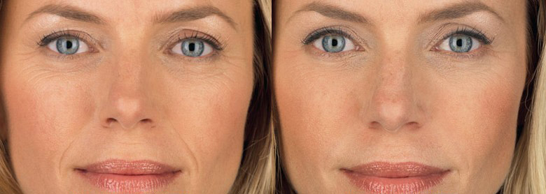

Witajcie! Dziewczyny, chcę podzielić się radosną wiadomością - mój mąż powiedział wczoraj, że myśli o trzecim dziecku. I możecie sobie wyobrazić, że jeszcze sześć miesięcy temu byliśmy bliscy rozwodu. Sytuację uratowało przypadkowe spotkanie z koleżanką i… mała tubka kremu przeciwstarzeniowego . Ale najpierw najważniejsze.
Droga od królowej piękności do brzyduli
Na studiach byłam najładniejszą dziewczyną. Dziewczyny były strasznie zazdrosne - czarne kręcone włosy, trzeci rozmiar piersi, wąska talia, ładna buzia… I praktycznie nie robiłam makijażu, bo nawet w czasie PMS moja skóra pozostała świeża i promienna, bez ani jednego pryszcza. Faceci szaleli na punkcie tego naturalnego piękna, i chodziłam na randki prawie każdego wieczoru. Ale to takie tam, kino-lodowisko, nic poważnego.

Ale pewnego dnia do naszej grupy przeniósł się jeden chłopak. Przystojny i milczący, cały czas siedział w swoich myślach i co szkoda, w ogóle nie zwracał na mnie uwagi. A we mnie coś się przebudziło! Zawsze miałam słabość do takich surowych mężczyzn, więc postanowiłam działać. Troszeczkę zmieniłam styl ubioru i zamiast spódnic, ledwo przykrywakrywających tyłek, zaczęłam nosić długie, swobodne sukienki, zaczęłam więcej czytać. A kiedy wpadłam na niego na dyskotece, tak przechodząc zacytowałam jego ulubionego pisarza - i rozmawialiśmy do rana, nie zauważając nikogo. I od tego momentu nigdy się nie rozstawaliśmy. Byłam zdumiona, jak pełen pasji był nasz związek, ponieważ na pierwszy rzut oka Robert był zimny i powściągliwy. Po kilku miesiącach zaczęliśmy mieszkać razem, potem zaręczyny, ślub… A teraz po salonie biegają nasze dwa małe egzemplarze - Anita i Ewa.
I wszystko byłoby super, gdyby nie jedna okoliczność - bardzo się zmieniłam. Dwie ciąże zrobiły swoje - klatka piersiowa opadła, płaski brzuch zniknął, wygląd skóry się pogorszył. Czasami, gdy mój mąż był w pracy, otwierałam album ze zdjęciami z uczelni i nie mogłam powstrzymać łez. Ja w lustrze i na tych zdjęciach to dwie różne osoby. Widziałam, że Robert zaczął mnie traktować inaczej, przesiadywał w pracy, odmawiał seksu. Nie winię go, bo nawet ja nie chciałabym bym taką. Nie miałam przyjaciół, bo na początku fascynował mnie Robert, a kiedy pojawiły się dziewczynki, to wszystkie moje wyjścia z domu były na spacer z córkami lub do sklepu po ciastka. I szczerze mówiąc, wstydziłabym się spotkać starych znajomych w takiej formie ... Ale pewnego dnia wracając ze sklepu z mężem, spotkaliśmy jego kolegę i pomylił mnie z mamą Roberta !!! Co może być bardziej upokarzającego dla kobiety? Wydaje mi się, że nic. Postanowiłam działać.
Próbowałam wszystkiego, aby nie stracić ukochanej osoby
Zaczęłam ćwiczyć w domu i z moimi córkami zamiast oglądać bajki zaczęliśmy grać w piłkę lub badmintona w parku. Zrewidowałam również odżywianie. Okazało się to łatwiejsze niż myślałam, ponieważ zawsze dobrze gotowałam, a teraz w Internecie można znaleźć wiele prostych przepisów. Ogólnie waga zaczęła spadać. Po 8 miesiącach wróciłam do normalnego wyglądu. Oczywiście lata zbierały swoje żniwo, i ciało nie było takie samo jak w czasie studiów. Z całych sił starałam się usunąć cellulit i jakoś zredukować rozstępy, aż pewnego dnia w przymierzalni zobaczyłam swoją twarz z bliska. Tak, właśnie wtedy, bo w ostatnich miesiącach patrzyłam wyłącznie poniżej szyi. Patrzyła na mnie wyczerpana około pięćdziesięcioletnia kobieta - jej twarz była pokryta zmarszczkami i jakimiś plamami, worki pod oczami, skóra zwiotczała i szara, nawet kontur twarzy posunął się. Po prostu byłam zszokowana - czy to efekt szybkiej utraty wagi, czy po prostu taka byłam, na tle nadwagi problemy z twarzą nie były już tak zauważalne?
Przerażona wybiegłam z przymierzalni, tak i nie kupując luksusowego szlafroka, po który przyszłam. I oczywiście był to idealny moment na spotkanie z koleżanką ze studiów - robiła zakupy w tym samym sklepie z bielizną. Emilia nigdy nie była piękna, ale teraz wyglądała po prostu cudownie, zwłaszcza w porównaniu ze mną. Rozmawiałyśmy o tym i owym, o wspólnych znajomych, pokazałyśmy sobie zdjęcia dzieci. I oczywiście zapytała, jak się ma Robert. Westchnęłam i powiedziałam, że jego kariera nabrała rozpędu i nawet pomyślał o otwarciu prywatnej praktyki. Absolutnie nie chciałam rozmawiać o naszych problemach rodzinnych, zwłaszcza biorąc pod uwagę, że kiedyś była też zakochana w Robercie. A potem zauważyłam w jej oczach zdumienie i jakąś ... litość. Litość do mnie. Koleżanka zapytała, co się stało z tą ognistą dziewczyną, z którą studiowała. Dodała, że prawie mnie nie poznała.
Byłam wdzięczna za jej szczerość, więc zapytałam, czy nie poleciłaby mi jakiś dobry krem tonujący, który ukryłby przynajmniej część moich zmarszczek. Jak się okazuje, działa to tylko na trądzik i pigmentację, a żaden podkład nie ukrywa zmarszczek i zmian związanych z wiekiem. Ale na szczęście dla mnie Emilia powiedziała mi o kremie, który sprawia, że wygląda teraz jeszcze lepiej niż wtedy, gdy miała 20 lat.
Tak dowiedziałam się o . Nie powiem, że zamówiłam to z wielkim entuzjazmem, bo nie bardzo wierzę w proste rozwiązania jakichkolwiek problemów, ale nie było nic do stracenia, bo za kilka miesięcy mój mąż planował duży wyjazd firmowy z żonami. Zaufałam, gdyż zostałam zainspirowana pięknym wyglądem i rekomendacją dawnej koleżanki i skład jest idealny — kwas hialuronowy, kolagen, różnego rodzaju witaminy... Wygląda jak zwykły krem, ale ku mojemu zdziwieniu cera zmieniła się po tygodniu stosowania. Zamiast ziemistości — świeży wygląd i rumiane policzki. Po miesiącu duże zmarszczki mimiczne zaczęły się wygładzać, a małe całkowicie znikały. Pigmentacja również należy do przeszłości. Moja starsza córka Anita powiedziała, że ma najpiękniejszą mamę. Ale co najważniejsze, mój mąż zaczął wcześniej wracać do domu z pracy i zapraszać mnie na prawdziwe randki. Długo oczekiwana impreza firmowa minęła fantastycznie, wyglądaliśmy jak para z Hollywood. Oczywiście nie zapomniałam o Emili i jej roli w tym wszystkim, ponieważ jej rady uratowały moją samoocenę, a może nawet małżeństwo. Nawiązaliśmy z nią kontakt i znowu chodzimy na kawę i zakupy, gdzie wymieniamy się różnego rodzaju sekretami urody.
Dziewczyny, nie zapominajcie o sobie! Wychowywanie dzieci, sprzątanie, gotowanie dla męża jest bardzo ważne, tak. Ale o wiele ważniejsze jest, aby pozostać kobietą, seksowną i z błyskiem w oczach. Przestańcie pracować ponad swoje siły i wydawać budżet rodzinny na cokolwiek, tylko nie na siebie. Kupcie sobie, na przykład karnet taneczny lub krem przeciwstarzeniowy . Kiedy kobieta jest piękna i zadowolona, wszyscy na tym korzystają!
Dbasz o swój wygląd czy poddajesz się? Co robisz z zabiegów pielęgnacyjnych?
P.S.: Odpowiadam na najczęściej zadawane pytanie, kupiłam krem tutaj, na ich oficjalnej stronie internetowej.
23 komentarze
Sabina Dudek
Opublikowano 2 godziny temu
Dwa razy w roku przechodzę kurację masażu u kosmetologa. Efekt jest świetny, ale budżet na tym bardzo cierpi... Może powinnam zamówić ten krem dla siebie.
Iwona Zaremba
Opublikowano 4 godziny temu
O, znam krem . Moja mama go używa, efekt jest wspaniały, wyglądamy jak rówieśniczki. Jeszcze tego nie potrzebuję, ale myślę, że po 5 latach też zacznę go używać, przynajmniej w celach profilaktycznych
Wioletta Grygowska
Opublikowano 4 godziny temu
Dlaczego twoja koleżanka nie uwiodła Ci męża?
Dagmara Bugajska
Opublikowano 5 godzin temu
Proszę nie mówić głupot! Ma szczęśliwą rodzinę, kochającego męża, jak i ja!
Alina Bojczuk
Opublikowano 10 часов назад
Środek jest super! Kupiłam go pół roku temu ze zniżką. Opłaciło się, bo już miałam pójść pod nóż do chirurga - pod oczami były takie worki, że można było przechowywać w nich ziemniaki. Dziewczyny, nie próbujcie ciężkiej artylerii, jeśli wszystko da się załatwić jedną tubką!
Jolanta Karpińska
Opublikowano wczoraj
Co ciekawe, niedawno koleżanka mówiła mi o . Jest ona bardzo atrakcyjną kobietą po czterdziestce! To jakiś znak z góry, ponieważ robię różne domowe maseczki, ale nie ma z nich żadnego skutku.
Aldona Kwiatek
Opublikowano wczoraj
A ja robię wszystko. Chodzę do kosmetyczki na zabiegi i kupuję drogie kremy, nie jem słodyczy. Wydaje mi się, że działa.
Zuzanna Juźwiak
Opublikowano wczoraj
Na tle zaburzeń hormonalnych mam pigmentację na całej twarzy, noszę okulary przeciwsłoneczne i nakładam makijaż nawet do sklepu! Czy ten pomaga na to? Bo moja kosmetyczka już nie wie co ze mną robić. Gdzie można zamówić ten krem?
Dagmara Bugajska
Opublikowano wczoraj
Tak, Pani Zuzanno, też miałam pigmentację na twarzy! Kwas askorbinowy poradził sobie z tym problemem. Zamówiłem tutaj.
Danuta Ślipko
Opublikowano wczoraj
Mój syn powiedział wczoraj „Mamo, masz takie piękne pręgi na czole”. Obudziłam się i zdałam sobie sprawę, że muszę coś zrobić z „pręgami”. I zobaczyłam ten artykuł.